Hace años , antes de que subieran allí arriba , en diciembre no llovía.
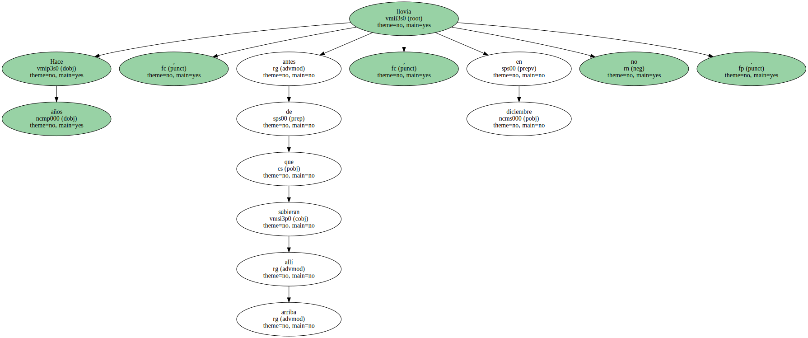Hasta el hotel era umbrío , construido en la confianza del sol inagotable , agravadas sus tinieblas por el trabajo al ralentí del personal en huelga , sospechosos los huevos , el bacon , las ensaladas de frutas , los copos de avena , la melaza , la mantequilla de ser una foto rancia de tiempos normales , aquellos tiempos de camareros felices , ahora arqueología de desayuno buffet libre para clientes recelosos de un servicio con reivindicaciones sociales.
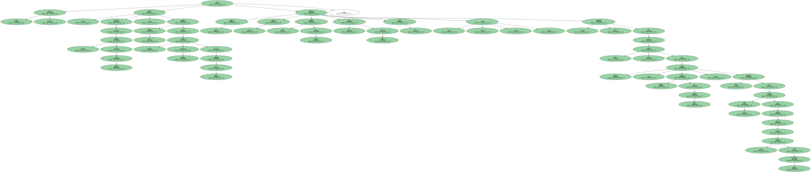Y sin embargo una dama de cartón y purpurina en el sombrero de copa guiñaba el ojo para proponer la fiesta de fin de año , Happy New Year 1984 , cincuenta dólares todo incluido.
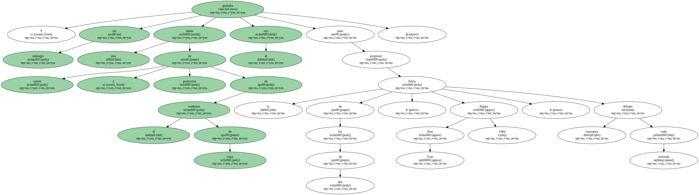- - Buffet libre , orquesta , baile.
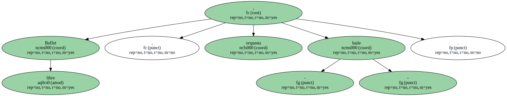Bebidas aparte.
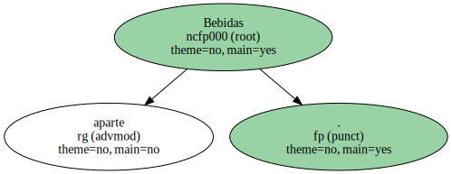Le informó la mulata de boca sangrienta sin levantar la vista de una máquina de calcular.
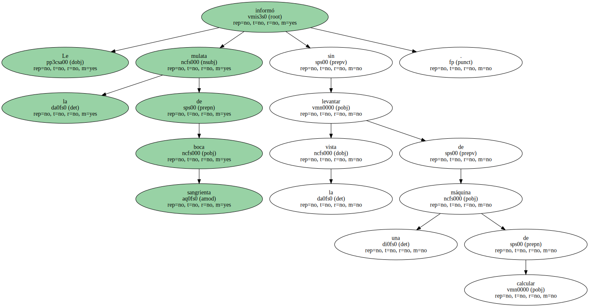- - ¿ Solo.
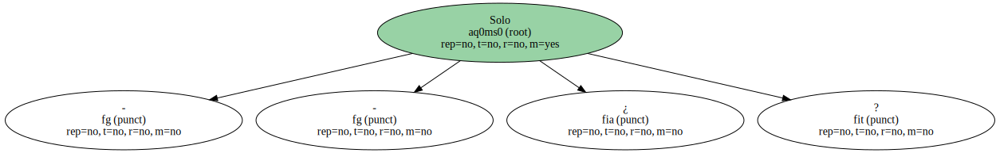- - Solo.
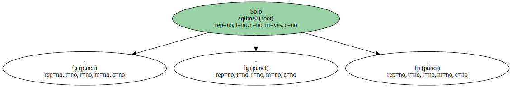Tuvo que deletrearle el nombre y el apellido.
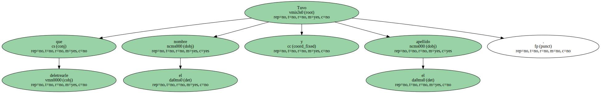- - ¿ Gino Larrose.
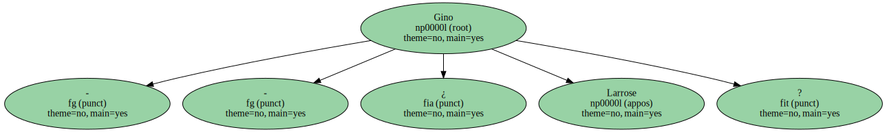- - Ginés Larios.

- - Habitación trescientos doce.
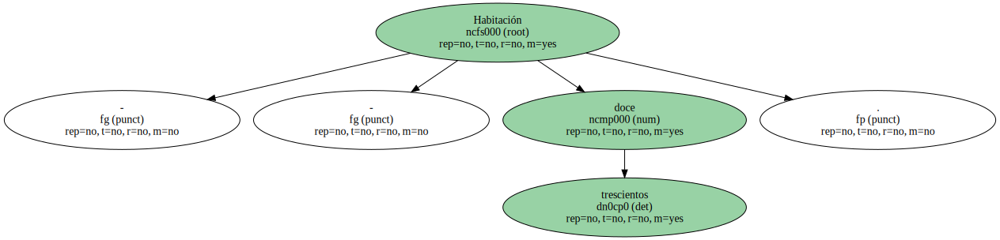- - Esto es al contado.
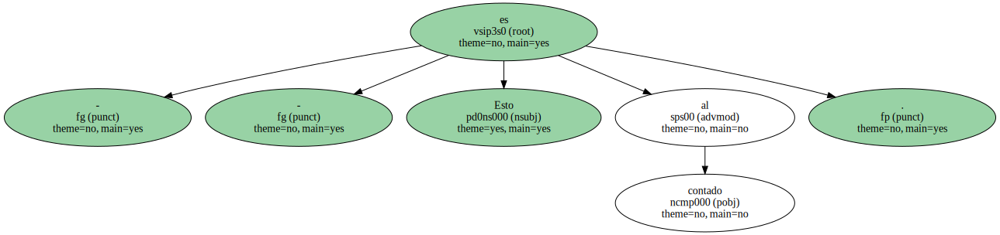No se carga en cuenta ..
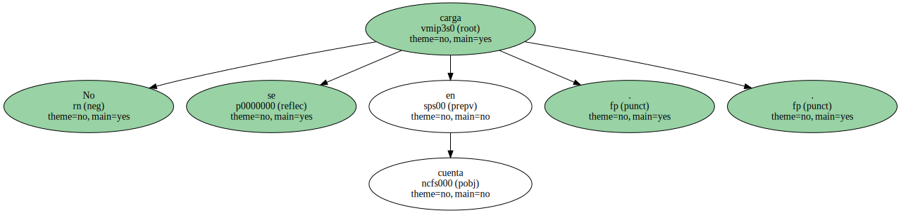Y en el rostro de la mulata asomaba la satisfacción por volver a la verdad del dinero en mano.
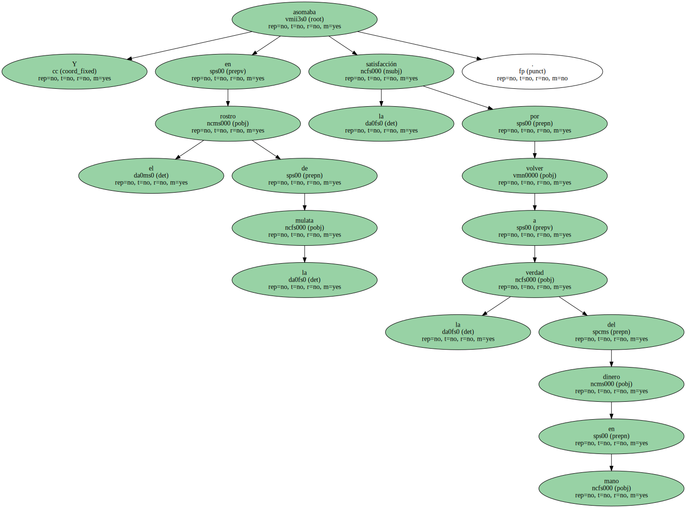El taxista contemplaba su negociación a distancia , con la sonrisa a medio camino entre una reflexión interior sobre la voluntad de fiesta del extranjero y el saludo al cliente de todas las mañanas.

- - No bueno.
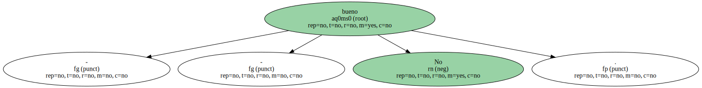No bueno.
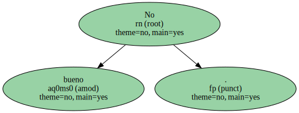Informaba el hindú alzando los brazos al cielo y cruzándolos luego sobre su panza.
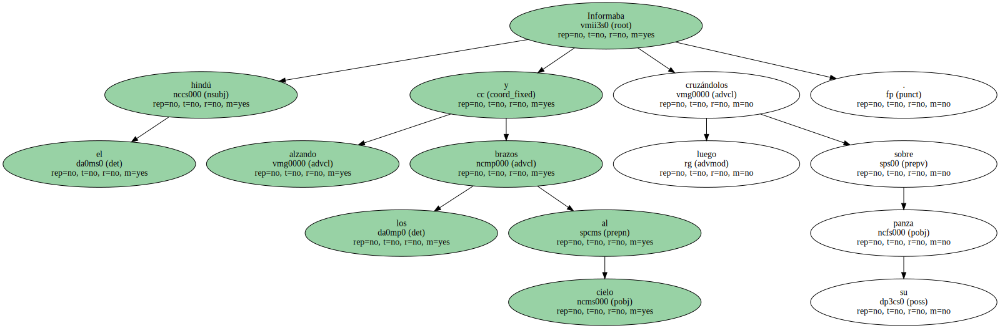- - ¿ Maracas Bay ? -.

¿ No hay otra playa en esta isla.
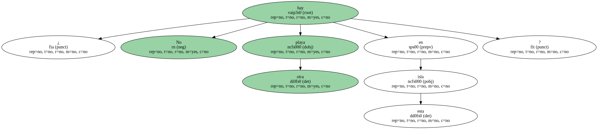- - En Chaguaramas Bay también está cubierto y al otro lado de la isla sopla el viento y llueve.
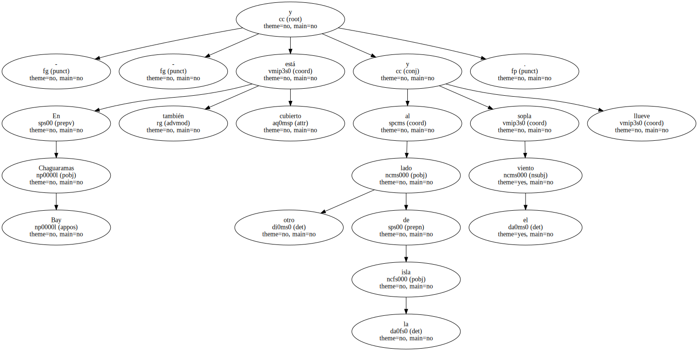Manzanilla Bay es muy bonito , pero viento y lluvia.
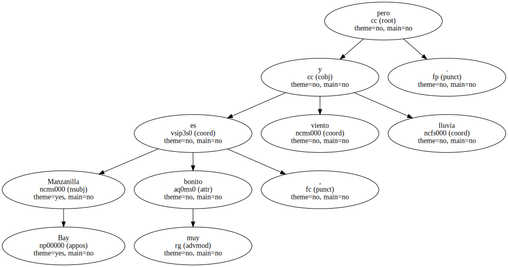Cabeceaba el taxista molesto por la información que se veía obligado a darle uno y otro día.
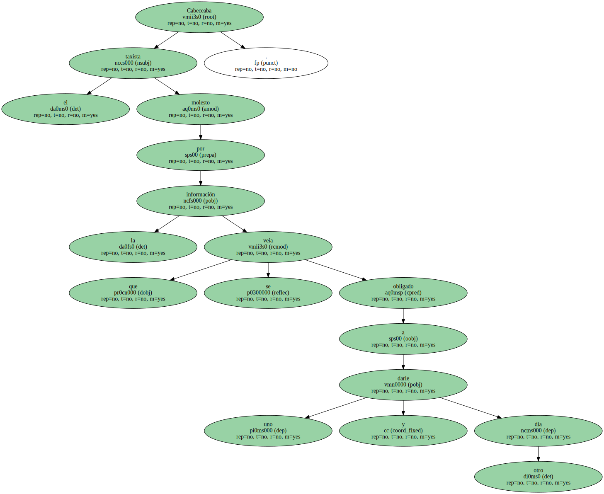